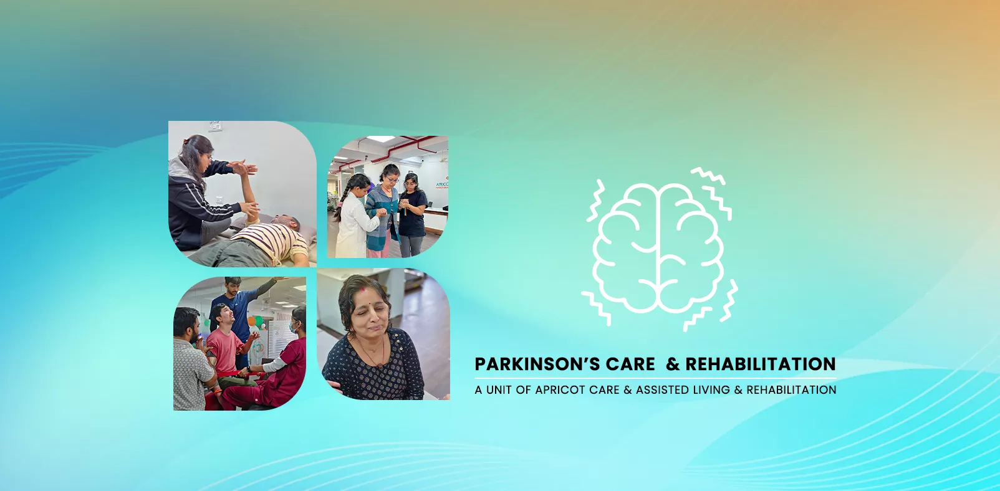

Compassionate & Specialized Parkinson's Care in Pune


A Proactive Partnership for Every Stage of the Journey
A diagnosis of Parkinson's Disease is the beginning of a lifelong journey, not just for the individual, but for the entire family. Navigating the progression of symptoms—from tremors and stiffness to challenges with walking and speech—requires more than just medical treatment. It requires a dedicated, knowledgeable, and compassionate partner who understands how to maximize quality of life, every single day.
At Apricot Rehab in Pune, we offer a specialized care program for Parkinson's Disease built on a foundation of empowerment and partnership. We understand the physical, emotional, and practical challenges you face. Our mission is to provide you and your family with an evidence-based, proactive plan to manage symptoms, maintain independence, and live a full and meaningful life.
Key Components of Our Parkinson's Care Program
Our holistic approach provides a circle of support to address the wide-ranging symptoms of Parkinson's Disease.
- Specialized Physiotherapy (LSVT BIG®):
The gold standard in exercise therapy to improve movement.
- Speech & Voice Therapy (LSVT LOUD®):
To combat the soft, quiet voice associated with PD.
- Gait, Balance & "Freezing" Management:
To improve walking safety and reduce fall risk.
- Occupational Therapy:
For independence and safety in daily activities.
- Psychological & Emotional Support:
For both the person with Parkinson's and their caregivers.
- Swallow Therapy:
To manage swallowing difficulties as the condition progresses.
- Nutritional Counseling:
To support overall health and medication effectiveness.
- Inpatient Stay & 24/7 Nursing Care:
For intensive rehabilitation and support.
Understanding the Parkinson's Journey
Parkinson's is a progressive neurological disorder that affects dopamine-producing cells in the brain, leading to challenges with movement control. The burden of Parkinson's Disease is significant and growing, with estimates suggesting that the number of people affected in India has more than doubled in the past two decades.
Our goal is to provide the right support at the right time, adapting our approach as your needs evolve through the stages of the disease.
- Care in the Early Stages: The focus is on proactive intervention. We introduce high-intensity, evidence-based exercise programs like LSVT BIG® to improve motor performance, build a strong physical foundation, and establish habits that can help maintain function for longer.
- Care in the Middle Stages:As symptoms like postural instability and freezing of gait become more prominent, our focus shifts. We introduce specific strategies to manage freezing, intensify balance training to prevent falls, and use occupational therapy to adapt daily tasks and maintain independence.
- Care in the Late Stages:In the advanced stages, our care prioritizes safety and quality of life. We focus on preventing complications like falls or respiratory issues, provide training for caregivers on safe transfers and daily care, and adapt the environment to ensure comfort and dignity.
The Role of Exercise in Managing Parkinson’s Disease
If there is one message that the global Parkinson’s research community agrees on, it is this:exercise is medicine. Multiple large-scale studies have demonstrated that regular, intensive, and purposeful exercise can slow the progression of Parkinson’s symptoms, improve mobility, and protect brain function.
This is not about casual walking or light stretching. The research points specifically to high-intensity, goal-directed exercise as the most effective approach. Activities that challenge your balance, force you to make large movements, raise your heart rate, and require concentration produce the strongest neuroplastic response.
What the Research Shows
- Forced-rate cycling: Studies have shown that cycling at a pace slightly faster than your natural speed can reduce Parkinson’s motor symptoms by up to 35%, similar to the effect of some medications.
- Resistance training: Strength training two to three times per week has been shown to improve muscle strength, walking speed, and the ability to perform daily tasks.
- Tai Chi and yoga: These mindful movement practices improve balance, reduce fall risk, and address anxiety and stiffness.
- Dance therapy: Tango and other structured dance programs have been studied extensively and show improvements in balance, gait, and quality of life for Parkinson’s patients.
- Boxing-inspired fitness: Non-contact boxing programs have gained popularity for Parkinson’s because they combine intensity, coordination, balance, and cognitive engagement in every session.
The key factor is not which exercise you choose, but that it is intensive, regular (at least three to four times per week), and ideally supervised by a therapist who understands Parkinson’s. At Apricot Care, we build an exercise program around your abilities, preferences, and goals, adjusting the intensity as you progress.
Our Integrated Services for Parkinson's Care
Our multidisciplinary team collaborates to provide a truly comprehensive care plan.
The Gold Standard: LSVT BIG® & LSVT LOUD® Therapy
Neuro Rehab is proud to have certified Physiotherapists who deliver these globally recognized, evidence-based treatments.
- LSVT BIG®: An intensive physical and occupational therapy program that retrains the brain to make bigger, more controlled movements. It is proven to improve walking, balance, and the ability to perform daily tasks.
- LSVT LOUD®: A speech therapy program that specifically targets the soft voice (hypophonia) common in PD. It retrains the vocal cords and brain to produce a stronger, healthier voice.
Specialized Physiotherapy & Gait Training
Our neuro-Physiotherapists are experts in managing the specific movement challenges of PD, including providing strategies to overcome "freezing of gait" and using cues to improve walking rhythm and safety.
Our occupational Physiotherapists provide practical solutions for managing daily life, from strategies for dressing and eating to handwriting exercises (to combat micrographia) and home safety modifications..
Living with a progressive condition takes an emotional toll. Our psychologists provide a vital support system for both the person with Parkinson's and their family, helping to manage apathy, depression, and the stress of caregiving..
For patients who can benefit from an intensive and immersive rehabilitation program, our state-of-the-art inpatient facility in Pune provides a safe, comfortable, and centerally supervised environment designed for optimal healing. We have intentionally created a space that combines the warmth and comfort of home with the standards and vigilance of a hospital, allowing you and your family to focus completely on recovery..
Our residential rooms are designed for accessibility, safety, and comfort. We cultivate a positive, nurturing atmosphere where patients feel supported and motivated. Every aspect of our facility, from the layout of the rooms to the communal spaces, is built to be a seamless part of your therapeutic journey..
Your health and daily needs are cared for around the clock by our dedicated team of skilled and compassionate nurses. This continuous, on-site care is a cornerstone of our inpatient program and includes timely and accurate medication management, assistance with all Activities of Daily Living (ADLs), and providing constant encouragement and emotional support.
Your recovery is overseen by our on-site medical team, ensuring hospital-level safety and immediate response capabilities. Our resident doctors and nursing staff provide continuous monitoring of vital signs and maintain seamless coordination with your primary neurologist.


our service
Our Comprehensive Care and Support Services
.webp)
.webp)
-(1).webp)
24/7 Nursing and Medical Supervision
At Apricot Care Assisted Living and Rehabilitation, we provide 24/7 nursing support to ensure that you receive continuous care and medical monitoring. Whether you're staying in our facility or recovering at home, our trained nurses and medical staff are always available to address your needs, ensuring a safe and secure environment throughout your recovery journey.
.webp)
.webp)
.webp)
.webp)
.webp)
.webp)
.webp)
.webp)
.webp)
.webp)
.webp)
.webp)
Why Choose Apricot Rehab for Parkinson's Care in Pune?
Certified LSVT BIG® & LOUD® Physiotherapists:
We offer the global gold-standard treatment protocols, a level of specialization that sets us apart.
A Proactive, Empowering Approach:
We don't just react to symptoms; we provide you with the tools to proactively manage your condition and fight back against its progression.
A True Long-Term Partner:
We understand that Parkinson's is a journey. We are here to partner with you and your family for the long term, adapting your care plan as your needs change.
Comprehensive Family & Caregiver Support:
We recognize the crucial role of the family. Our program includes education and psychological support for caregivers to help manage the demands of the disease.